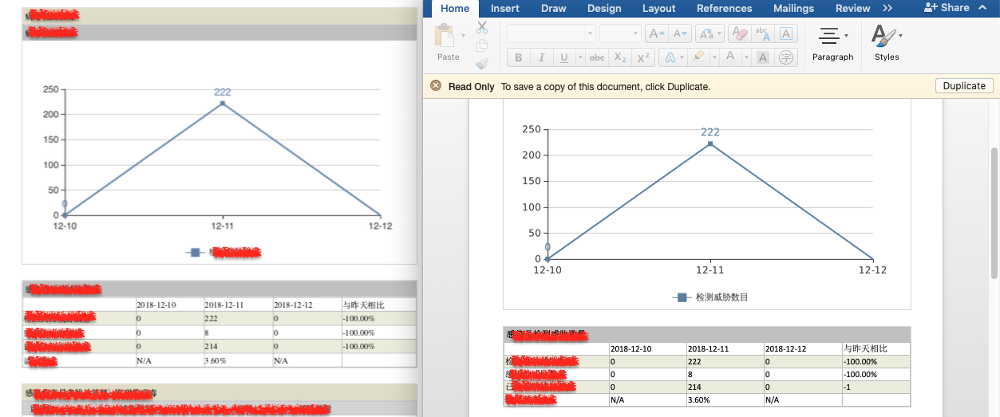

PDF To Word / PDF转Word格式¶
| date: | 2018-09-13 |
|---|---|
| tags: | Linux, Docker, LibreOffice, PDF |
| category: | Tools |
| slug: | pdf_to_word |
| author: | Brian Shen |
| summary: | PDF To Word |
Contents
Intro / 简介¶
Here is the situation. I met some clients and they need reports. A quite normal feature request. I generated report using PhantomJS and sent them PDF reports.
一些客户需要产生报告，这是很正常的功能，我们可以通过 PhantomJS 产生PDF的报告。
But they were not satisfied because they need other editable formats like MS Word so that they can modify the report and use it.
但是客户并不满足与PDF的报告，他们还需要像Word这样的格式。
Word Format is not a standard format actually. So I faced lots difficulties. And since I already have HTML and PDF version, I don’t want to change code up and down, I wish them controllable. So I searched for solutions how I can convert html or PDF to doc.
Word 并不是标准的格式，更不是面向代码的。这种情况下，既然有PDF 文档了，我更希望以最小的改动实现这个功能。
PhantomJS cannot do this. There is little solutions. I tried following ones and finally chose the solution using LibreOffice because the basic format can be kept.
PhantomJS 不能够完成这项任务。 解决方案很少。最终我是使用了LibreOffice 进行转换， 因为基本的格式都能够被保存下来。
Success - LibreOffice¶
Documents that generated by LibreOffice keeps most formats, and it looks almost like the PDF content. That’s great!
通过LibreOffice产生的文档基本保留了全部的格式，并且与PDF 有相同的渲染。非常棒。
But I still have some concerns. For example, it costs disk and makes installation more complex. But after compared with other solutions listed behind, I think it is totally acceptable.
但这里仍然会有一些疑虑，比方说，LibreOffice会使得安装过程更加的复杂，需要额外的磁盘等等。 但是比较完搜索到的方案，这些还是可以接受的。
While installing LibreOffice in Ubuntu and CentOS is very easy, just remember to install gtk2.0 and so on because they are prerequisites.
在 Ubuntu 和 CentOS上安装 LibreOffice是非常方便的，但是一定要记得先安装 gtk2.0 ， 因为这是前提。
apt-get update
apt-get install gtk2.0
apt-get install -y software-properties-common
cd /root/LibreOffice_5.3.6.1_Linux_x86-64_deb/
dpkg -i *.deb
And use this /opt/libreoffice5.3/program/soffice in command line.
命令行中使用 /opt/libreoffice5.3/program/soffice 调用。
Convert soffice --infilter="writer_pdf_import" --convert-to doc file.pdf
转换使用的命令： soffice --infilter="writer_pdf_import" --convert-to doc file.pdf
See what happened: 转换完之后，我们看下PDF 和 Word的对比。

But I met obstacles in Docker because docker is not equipped with many dependencies. This is my Dockerfile: (I downloaded the 5.3.6 version and copied them to docker.)
因为产品环境实在docker中运行的，安装还是有一些问题。 下面Dockerfile 文件：
FROM node:6.14.0
ADD . Libre
RUN apt-get -y update && apt-get install -y software-properties-common && apt-get -y install gtk2.0 && cd /Libre/LibreOffice_5.3.6.1_Linux_x86-64_deb/ && dpkg -i *.deb
when use this docker image and call LibreOffice, there are tips as docker environment has no display.
在docker中使用 LibreOffice 时，会调用失败，如果不做特殊的设定的话。 因为docker环境默认是没有显示的。
Here is how to solve it:
可以 通过这样的方式解决：
xxx:
image: xxx
container_name: xxx
volumes:
- /tmp/.X11-unix:/tmp/.X11-unix
environment:
- DISPLAY=unix:0
Failure Attempts¶
From LibreOffice official site (https://www.libreoffice.org/get-help/system-requirements/), there are some prerequisites:
在 LibreOffice的官网中，提到了一些前提， 要注意选择性的安装，否则会导致安装失败。
- glibc2 version 2.5 or higher (check)(ldd –version)
- apt-get install gtk2.0 (check)(dpkg -l libgtk2.0-0 libgtk-3-0)
- Gnome 2.16 or higher
- Instal from ppa
RUN awk '$1 ~ "^deb" { $3 = $3 "-backports"; print; exit }' /etc/apt/sources.list > /etc/apt/sources.list.d/backports.list
apt-get update
apt-get install -y software-properties-common
add-apt-repository -y ppa:libreoffice/ppa
apt-get install -y libreoffice=5.3.6.1
- Install GNOME
apt-get install task-gnome-desktop --no-install-recommends
sudo apt-get install ubuntu-gnome-desktop --no-install-recommends
Failure - abiword¶
apt-get -y update
apt-get -y install abiword
The output document keeps nearly no cascading styles. So give up this one.
abiword 导出的 Word 文件，基本是没有任何的 样式的。
Failure - pandoc¶
yum install pandoc
The output document only include basic text. Still give it up.
pandoc 导出的文件也是没有格式的。